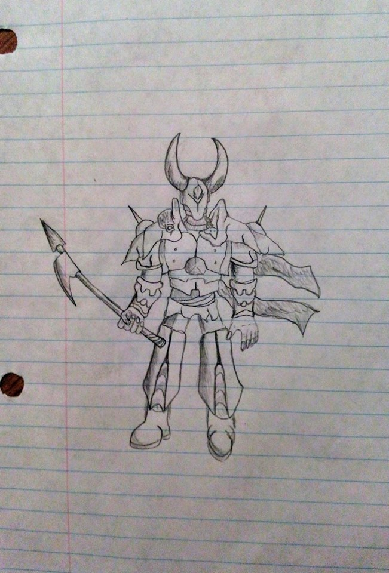
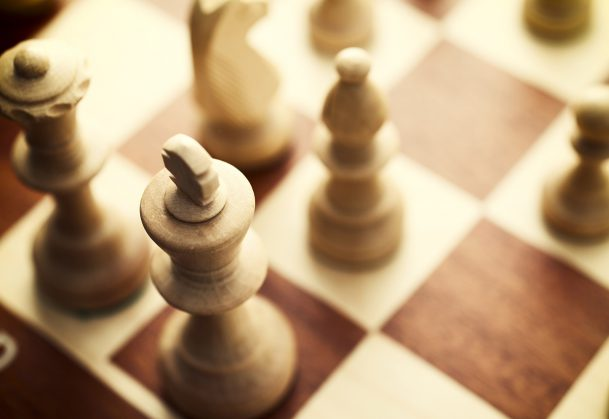
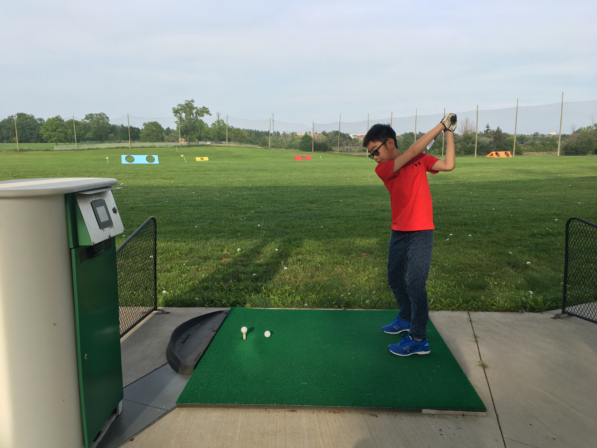
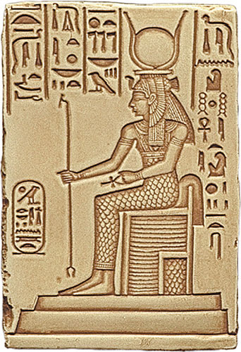
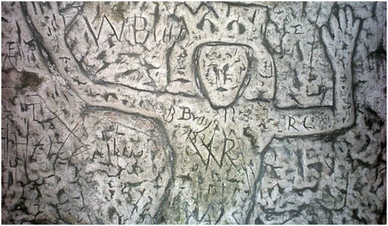
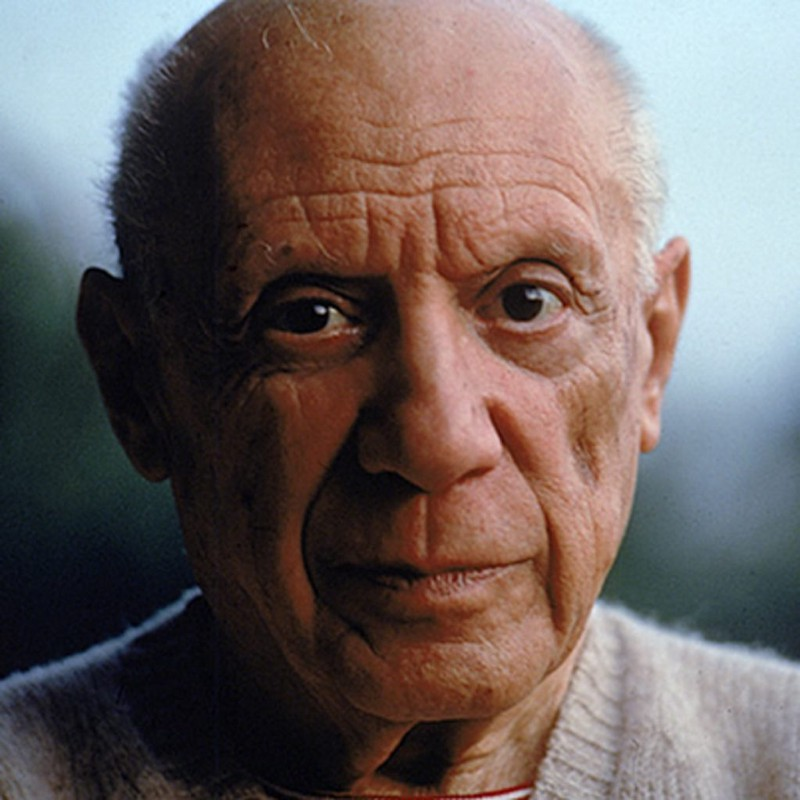
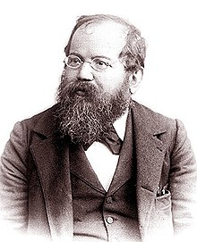
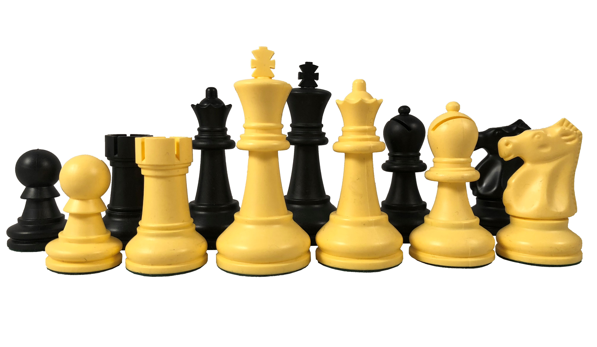
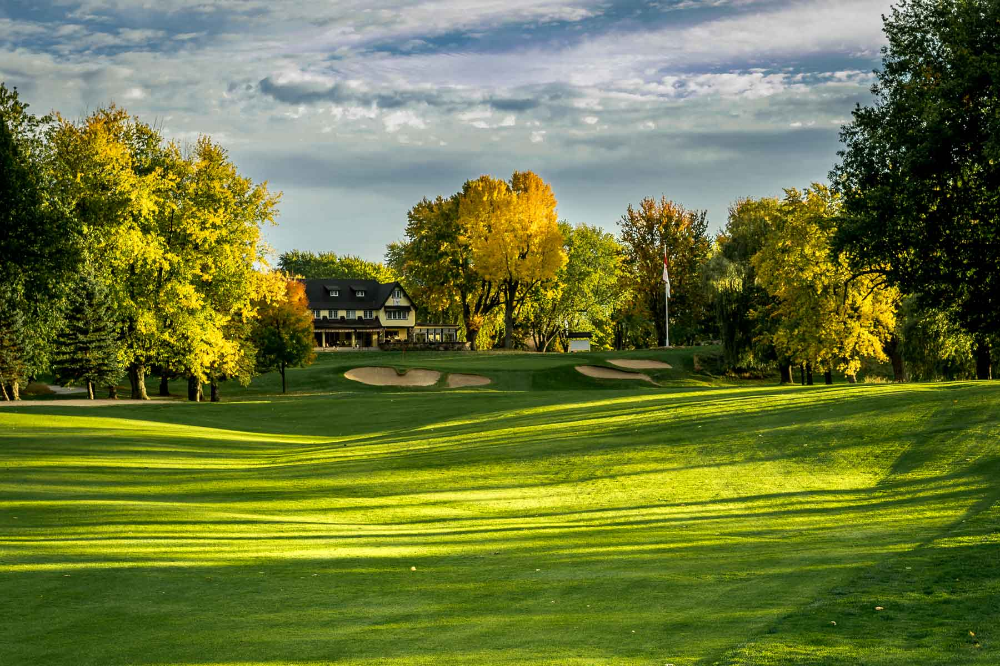
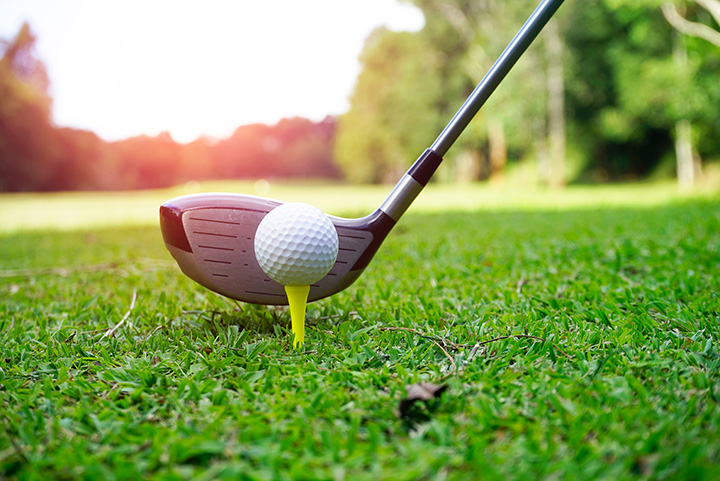

| Drawing | Chess | Golf | Reference |
|---|---|---|---|
|  |  |  |
Here is information on my three favourite hobbies.
Click on the words or pictures above for further information.
Drawing is a type of visual art that utilizes different tools to imprint a picture onto a two dimensional surface, usually paper.
There are many reasons why people draw. Listed below are some common reasons why people might find drawing useful.
When people think of drawing they usually think about using lines to make a picture, however drawing is more than that. To this day, the art of drawing has expanded to many other forms of art such as painting, scultpture and architecture. Drawing is like the base of visual art and has created many branches from itself. The first known art pieces were in the time of somwhere between 10,000 to 30,000 BC. Old drawings were usually found carved or painted on the walls of caves or other ancient surfaces. The egyptians used drawings to decorate their walls and pyramids as well as to record their history and knowledge.
| Egyptian carvings | Cave drawings |
|---|---|
|  |  |
There were many great artists that existed before our time and some still exist today. Listed below are only a few of the many great artists that have changed the world and have acted as huge inspirations for many people.
| Pable Picasso | Leonardo da Vinci |
|---|---|
|  | |
These people are all great artists and have all mastered different techniques. Many people use these different techiques for different occasions and activities, but there is always a starting base. The way that normal artists draw may seem simple, but it is actually quite complicated. If you want to start learning how to draw go on art-classes.
There are also many tools that an artist uses. Here are some recommended materials to start drawing.
Chess is essentially a battle of wits. It's a game where strategies, tactics, and skill are brought into play. The earliest known version of chess appeared in India in the 6th century AD(Anno Domini). Eventually, the game made its way into Europe in the 15th century where the movement rules of the pieces were changed. The modern chess that we know today however, emerged in the 19th century where the first chess clock was invented and the first chess world championship was held. By this time, Wilhelm Steinitz was the undisputed world champion and held onto the title for 8 years.
| Wilhelm Steinitz |
|---|
|  |
Chess is extremely complicated for those who play it professionally, but it's actually not that hard to begin playing. Here is a quick and small guide to start playing chess.
Firstly, there are thirty two pieces in total, and there are 64 squares on the board. There are sixteen pawns, four rooks, four knights, four bishops, two queens and two kings. There are also two sides in the game: white or black. The player who controls the white pieces will go first to start the game off, and the player with the black pieces will follow afterwards. The point of the game is to put the opponenent in checkmate. You do this by making it so that the king can't move to any square and is also being attacked by one of the pieces. A piece can attack another piece if a square it can move to is being occupied by an enemy piece. However, a piece cannot move through another piece to move, it must first have a clear path to reach it's objective. Now here are the movesets for each piece.
| Pawns | Rooks | Knights | Bishops | Queens | Kings |
|---|---|---|---|---|---|
| Pawns move in a forward direction by only one square. However, the first time they move, they can travel two squares. If an enemy piece comes to one of their two front diagonals, the pawn may move to that diagonal and take the piece. | Rooks can move front, back, left or right any amount of squares. It cannot travel by diagonals. | Knights are the only pieces that can jump over others. They move in an "L" shape by moving two squares front, back, left, or right, and then move either of the two directions (that you haven't traveled) one square. The knight cannot move by diagonals. | Bishops can move by diagonals any number of squares. | Queens can move diagonals and straight lines any amount of squares. It is a hybrid of a bishop and a rook. | Kings have the same moveset as queens but can only travel one square any direction. |
If you want to learn more about how to start chess click on the chess guide
When one is more advanced, they can start utilizing openings in their games. An opening is a sequence of moves at the very start of the game used to accomplish a goal.
Chess is a very competitive game. Players from all around the world compete in competitions and tournaments to earn themselves a reputation for their skill and hard work. knowing this, there's no wonder why a point system is implemented to measure each player's level. This is called a player's rating. Here is a list comparing the proportions between skill with rating.
Golf is a sport that requires consistent use of skill and patience. There are many different situations in golf, but it still revolves around the same rule. The player uses a golf club to hit the ball and tries to get in the hole or a target. For example, chipping is when someone uses a golf club to hit a ball lightly, lifting it a certain amount in order to get into a specific area. The modern version of golf that we know today developed around the 15th century in Scotland where it was first banned. However, the origins of the earlier predecessors are unknown. There is a controvery to who and what actually started it. Some researchers think they were originally founded by the Romans, while others think they were founded by the Chinese or the English as they all had games in the past that seemed particulary similar to the sport of golf.
|  |  |
There are many different clubs in golf. First off, what is a golf club and what does it look like. Well, they're usually metal but sometimes wood and they have thin shafts with heads to hit the golf ball. They require a certain stance and technique to swing them as well. If you wish to learn how to swing them go on Wikihow
Here is a list of all the different golf clubs and their purposes.
Despite their name, woods are no longer made out of wood but instead, metal. They are made with the biggest heads which in turn packs more power. Woods are meant for long distance shots.
Irons have much smaller heads than the woods but still have generally the same shafts. They have twisted edges on their heads in order to spin the ball. The types of irons range from 3-iron all the way to 9-iron. These clubs are usually meant for more moderate shots.
These are the most unique of all the golf club types. Putters are meant for extremely light hits to get the ball into the hole. Golfers usually use it when they are close to the hole (relative to meters).
Wedges are similar to the irons as they have the same kind of head. The unique thing about them is that the head is twisted to a large extent. This allows the wedge to almost scoop the ball and make it fly greater heights.
They are the newest type of golf club. They are a mix of woods and irons and are said to be easier to hit. Think of these as optional replacements for irons as they have greater force, mobility and control to their swings.
Playing golf means you have to traverse large fields while carrying heavy bags. It poses as a challenge to many people including myself, but that only makes it more fun. From golf we can learn many skills, make new friends, and also obtain benefits in physical and mental health. That is why golf is one of my most favourite hobbies.
If you made it to the end of this page I congratulate you. I thank you so much for taking your time in reading this. Please check out my other webpages including my reference page. I promise they are not as long. Find them at the top
HTML Validated CSS Validated